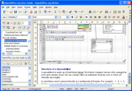

Writer
Za vse vaše dokumente
WRITER ima vse, kar lahko pričakujete od sodobnega, popolnoma opremljenega urejevalnika besedil ali programa za namizno založništvo.
Dovolj enostaven je za hitre zapiske, in dovolj močan za ustvarjanje celih knjig s kazali vsebin, pojmov, diagrami itn. Svobodno se lahko prepustite sporočilu samemu - saj WRITER poskrbi, da je videti izvrstno.
 Čarovniki odstranijo nadležnost iz izdelave običajnih dokumentov, kot so pisma, faksi, dnevni redi, zapiski, kot tudi izvedbe bolj zapletenih opravil, kot je spajanje dokumentov. Seveda imate vso svobodo ustvarjanja lastnih predlog.
{kind=link}
Slogi in oblikovanje postavljajo moč slogovnih datotek v roke običajnega uporabnika.
Ujemite tipkarske napake sproti s slovarjem Samopopravkov, ki lahko preverja črkovanje, medtem ko tipkate.
Zmanjšajte napor pri tipkanju z dopolnjevanjem besed, ki predlaga pogoste besede in fraze, tako da dokonča natipkano.
Samooblikovanje poskrbi za oblikovanje že med samim tipkanjem, tako da se lahko v miru posvetite sporočilnosti svojega pisanja.
Okviri z besedilom in povezave vam dajejo potrebna orodja, da se spopadete z opravili namiznega založništva za svoje biltene, letake itn., da bodo ti postavljeni natanko tako, kot to želite sami.
Povečajte uporabnost svojih obsežnejših, zapletenejših dokumentov z ustvarjanjem kazala vsebine ali kazala pojmov, bibliografskimi sklici, ilustracijami, tabelami in drugimi predmeti.
Pošljite dokumente po e-pošti - WRITER ponuja neposredno povezavo z vašim programom za e-pošto.
Naredite svoje dokumente prosto dosegljive z izvozom v obliki HTML na splet, ali jih objavite v zapisu Portable Document Format (.pdf), s čimer si zagotovite, da bo tisto, kar napišete, tudi to, kar vidi bralec.
Shranjujte dokumente v zapisu OpenDocument, novemu mednarodnemu standardu za pisarniške dokumente. Ta zapis, zasnovan na XML, pomeni, da niste omejeni zgolj na WRITER. Svoje dokumente lahko uporabljate z vso programsko opremo, ki podpira standard OpenDocument.
WRITER lahko seveda bere vse vaše stare dokumente v zapisu Microsoft Word, kot tudi shrani vaše delo v zapisu Microsoft Word, če jih želite poslati ljudem, ki so še vedno vpeti v izdelke podjetja Microsoft.